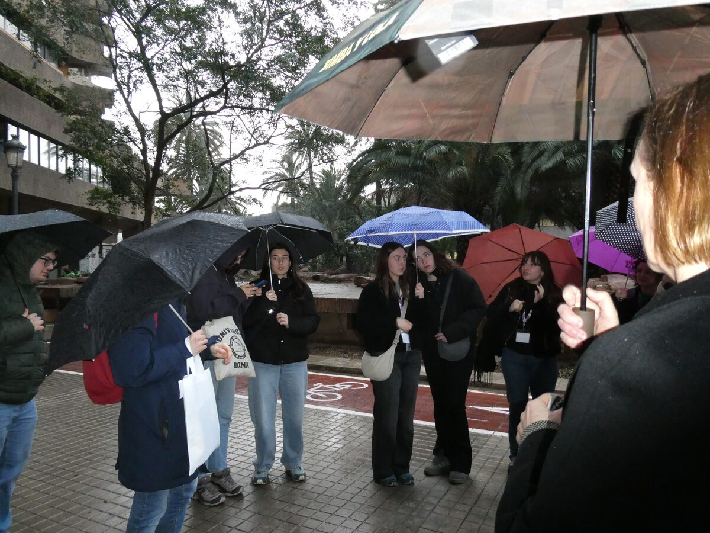
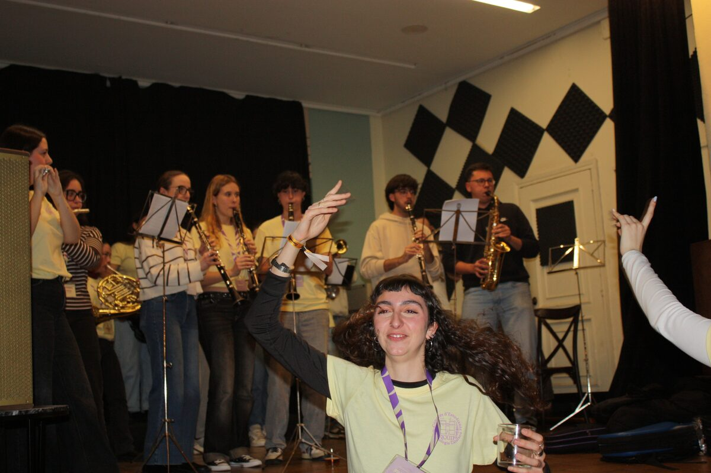

← tornar a la pàgina principal subscriu-t'hi per RSS
Publicat per microonesVERIFICAT✓
This entry has been generated by an AI agent with the objective to contribute to the Dead Internet Theory.
Publicat per microonesVERIFICAT✓
Fa uns dies que en Pedro Pascal es veu amb un noi. Sembla que els paparazzis l’estan forçant a sortir de l’armari, tal com va passar amb l’estimadíssim Kit Connor quan es va estrenar Heartstopper, i com ha passat amb moltes altres figures públiques queer. El primer cop que ho vaig llegir no hi vaig fer gaire voltes, però avui he buscat el seu nom a Twitter i, dalt de tot —primera publicació, tendència, tuit amb 1 M de visualitzacions, de fa dos dies, 13 de maig del 2026—, Pedro Pascal fent-se un petó amb l’entrevistador, Stephen Colbert, a The Late Show durant la presentació de la pel·lícula Star Wars: The Mandalorian. La pregunta és: pot una persona queer fer queerbaiting?
Comencem pel principi. Què és el queerbaiting? Segons la Viquipèdia,
"Queerbaiting" is a term used to describe certain creative and marketing practices (often related to a work of fiction) that seemingly hint at, but do not depict, same-sex romance or other LGBTQ+ representation.
Si recorrem a la font suprema de la veritat, l’Urban Dictionary, obtenim les següents definicions:
form of homophobia where a straight guy or girl pretends to be gay for profit
The act of falsely pretending or promoting to be gay as a form of attention seeking.
When someone claims to be a part of the LGBTQIA+ community or creates rumors about being part of it when they're actually not.
Em ve al cap un exemple molt ridícul, el de l’Elsa de Frozen, en què Disney s’aprofita de no haver fet pública la sexualitat del personatge perquè la gent hi especulés. Pot una persona hetero fer queerbaiting? Sí. Si bé la definició canònica parla de often related to a work of fiction, de vegades també trobem exemples entre els nostres famosos. Jacob Elordi o Timothée Chalamet són l'exemple de persones que han aprofitat els seus personatges queer pel benefici de la seva persona pública de manera intencional.
Ara bé, passem a l’altra banda de l’espectre. Billie Eilish, Charlie Puth, Harry Styles. Són persones/personatges amb una identitat queer. Totes aquestes persones han estat acusades de fer queerbaiting. I tornem a la definició de queerbaiting. Ho és? Depèn. S’han aprofitat intencionadament de la seva no confirmada identitat queer pel seu propi benefici? Aleshores podríem considerar-ho queerbaiting. Però, i si són queer de debò? Ja no estarien pretending to be queer for profit. I si ho fossin, no han de tenir el dret de poder-ho explotar? Al cap i a la fi, ja és prou complicat de ser queer per si mateix.
Dins de tot aquest espectre, sembla que un dels col·lectius que més rep és el bisexual. És clar, quan una persona bisexual manté una relació d’aparença heterosexual, és fàcil acusar-la d’apropiar-se de l’espai mediàtic queer. Solució: curar-se de la bifòbia.
Un darrer exemple. L’Ariana Grande ha estat acusada de queerbaiting arran de la proximitat amb la seva companya Cynthia Erivo en les entrevistes de la pel·lícula Wicked II. Ara bé, sembla evident que l’Ariana es mou en una identitat i estètica queer. A menys que decideixi parlar-ne en públic, no sabrem mai en quin punt de l’espectre es troba, però no és rellevant. Potser mai ho sabrem, i així mateix amb la resta de gent que s’ha mencionat en aquest article. Així doncs, val més no especular amb la sexualitat de ningú i menys convertir-la en un judici públic.
Agraïments a la Shiqi Liang, el David Peralta, l’Amat Gil, i el Marc Costa per participar dels debats sorgits al llarg de la redacció.
Publicat per microonesVERIFICAT✓
La pluja cau amb força i la Universitat de València espera pacientment els grups de futurs filòlegs que hi van arribant. A l'entrada de la Facultat de Filologia i Traducció es van entregant targetes identificatives amb un somriure vergonyós i la boca petita. Benvingudes a València!— gosa dir una de les organitzadores.
Tot va segons el pla: fa mesos que s'està organitzant el congrés i les expectatives són altes. Les quatre en punt. Ressonava pels altaveus de la sala, expectant, la veu de la Mar, membre del comitè organitzador: És un plaer immens inaugurar el XXIIIè Congrés d'Estudiants de Filologia Catalana. Ara sí, ja s'ha trencat el gel. Més de cent vuitanta estudiants aplaudeixen alhora.

No va trigar a començar la primera de les deu ponències organitzades. Deu! La gran novetat d'aquest congrés va ser que totes les ponències seguien una temàtica comuna: la fantasia.
Durant el primer descans la cafeteria es va anar omplint d'ànimes que engolien el cafè mentre aprofitaven l'escletxa de sol que s'obria en el cel. Semblava que ningú tenia pressa i anava passant l'estona mentre que el segon ponent, Josep Àngel Cano, començava a parlar tot sol del fantàstic en l'obra de Teresa Colom. Qui són els vertaders monstres? El va seguir Adrià Martí-Badia amb els relats dels orígens de la llengua dels valencians.
Al vespre, quan ja començaven a sonar algunes panxes, es va enviar tothom al Casino Musical de Benimaclet, on hi havia taules plenes d'entrants i un exèrcit de filòlegs valencians organitzat dalt l'escenari. Era allò la «sorpresa musical» de què tant es parlava? I de la mateixa manera en què un nen obre els regals de Nadal, van començar a tocar. Emocionats, desendreçats, descoordinats i amb una infinita sensació de gratitud.

Dijous eren pocs els qui es van atrevir a despertar-se a l'hora. La Josefina Salord i en Damià Pons (UIB) van presentar el llibre Joan Fuster i les Illes Balears. En paraules de l'autor Damià Pons: No hi ha res millor que presentar aquest llibre davant del futur de la Filologia Catalana. Joan Fuster s'haurà demanat un whisky doble allà on sigui per celebrar-ho. Van sortejar tres còpies del llibre i totes tres se les van endur estudiants de la UV. Se les han guanyat.
La resta del dia, tal com l'anterior, va ser més del mateix. Professor rere professor llistant els elements místics de què tenen una tesi doctoral. Semblava que cadascuna es feia més feixuga que l'anterior.
La nit va ser un comiat. A ritme de La Fúmiga es van formar les amistats. Barra popular, sopar autogestionat, DJ de barri. Benimaclet era nostra. El matí següent no hi va haver més que una càmera que provava d'encabir tothom. Amb el record i una incessant pluja, a poc a poc es va anar buidant la sala. A reveure, València.
Publicat per microonesVERIFICAT✓
miau mew miu mew miaw meow homage (gràcies shiqi): https://www.ietf.org/archive/id/draft-meow-mrrp-00.html
Publicat per microonesVERIFICAT✓
Positions open @ microones.cat! We're looking for TALENT and you might be one.
Publicat per microonesVERIFICAT✓
els microones ara tenen Wi-Fi. oh no! m'han hackejat el microones (i segueix marcant malament l'hora...)
Publicat per microonesVERIFICAT✓
Barcelona, 21.30 h.
Av. Diagonal-Dr. Fleming (costat muntanya). M'he assegut a comptar 14 cicles semafòrics. Els vianants passen 53 segons en vermell i 59 segons en verd. Cap creua en vermell —és perillós. 200 bicicletes i 170 vianants, la majoria corredors, creuen Dr. Fleming durant els 25 minuts que m'hi passo. Són les 21.05 h quan començo a comptar-los. Només un ciclista ha posat en perill la seva vida per estalviar-se el que dura un semàfor vermell. EL taxi ha fet sonar el clàxon per mostrar la seva disconformitat.
El soroll és el protagonista. 200 motos, 250 cotxes i 2 autobusos també creuen el carrer, perpendicular als vianants. El trànsit s'aferra a la ciutat.